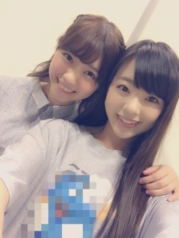
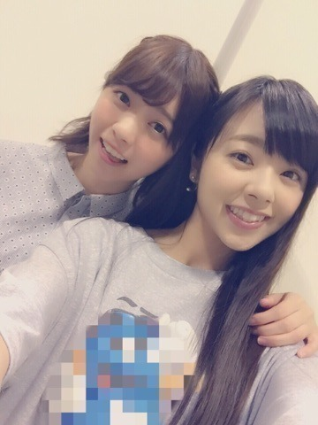
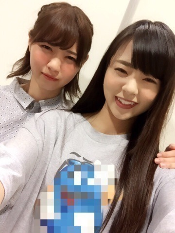
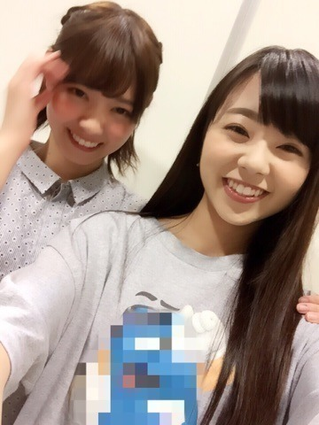
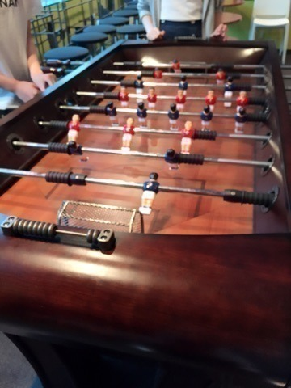
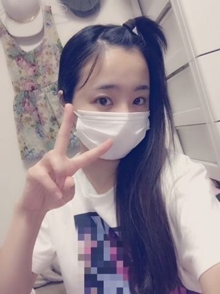

| 2015/06 18 Thu | 川村真洋 なあまにの写真ー。 改めて色々ー。日村さんーΣ(￣。￣ﾉ )ﾉ♡笑 |
こんにちわ♡
まにだよ？ ろってぃーだよ？
あー, なあまにの写真沢山あります．
載せてくねぇ～.＊
とりゃぁ。

えいっ。

うっ...。（ええやろこれ♡）笑ノ

にかぁぁ（＾ω＾）ノ

仲良しっちぃぃぃ♡ノ
ななせまるぅぅぅ。
ツアーのリハ期間に入ったら2人でリハ終わりにご飯に行くっち♡ 約束したもぉーん(・ω・)ノ♩わら
・・・・・ でそうそう！！
明日「ミュージックステーション」なの♡ノ
今回,私達乃木坂46は「命は美しい」を披露させて頂けることになったのですが,,,
兼任を終えた松井玲奈さんのポジションを誰にするか？となった時に,本当に本当に有難い事なんですが,
私が玲奈さんのポジションをやらせて頂く事になりました
。
「命は美しい」は私個人的にも色々思い出があって大切な曲です。
玲奈さんが別仕事で忙しい時は,私が歌番組やLIVEに出させてもらっていたのですが,
アンダーメンバーでは2列目,3列目をずっとやっていて,選抜メンバーでは3列目のポジションをやっていた私は,
「命は美しい」という曲で改めてフロントで歌う踊るという事の重圧感,責任感をすごく感じる様になりました。
アンダーライブでは,フロントやセンターといった有難いポジションをやらせて頂けて,
選抜メンバーが急遽出れなくなった収録,ライブでは,私が急遽アンダーとして呼ばれたりだとか...
なんかなぁぁ...なんだかなぁぁぁ。笑
本当に今まで色々あったけど,
本当に本当に本当に, ここまでずっと頑張ってきてよかったなぁU・x・U。と思います
。
ファンの皆様や家族に心配かけてしまった時期もあったと思うのですが,
最近のろってぃーは,happy！happy！が伝わってくるでしょッ♡？笑（＾ω＾）ノ
なんだか最近ね、一つ大きな山を越えたよッ♩って感じっち♡笑
今年の2月位からかなぁ～、、
急に自分の考え方や,物事の受け止め方が変わって,自分でもびっくりしたんだけど,
自分が変わり出した瞬間,身の回りが色々変わっていって,全てがガラッと変わりました（＾ω＾）.＊
何また改まって話してるんだろ。？
まぁ、 たまにはね...笑
とにかく,「ミュージックステーション」にフロントで立たせてもらえる。という事は,私にとってはとても大きいことです( ´ ▽ ` )ﾉ
今まで応援してくださったファンの皆様,スタッフの皆様,家族,友人に, 少しでも恩返し,いい姿を見せられる様,頑張ってきますねぇ♡！
楽しんできます！ 見ててねぇぇん。
あーーーい、
仕事場でこんなもん発見ーーーー。
初めてやったけど、めちゃめちゃ楽しいーーー( ´ ▽ ` )ﾉ♩

ぁ、、それとそれと『乃木坂工事中』、、、
日村さんーーー！！！（＾ω＾）笑笑笑
本当にTVの前でつっこみまくりですよ♡ノ笑 「まひろそんなんちゃいますーッ！」って♡
なんとなく特徴とらえてるかもだけど,色々盛り過ぎて凄いことになってるじゃないですか！！笑
ぃゃ～,まあ, 私の居ない所で,あんなにもろってぃーネタで盛り上がってくださるのは本当に嬉しいんですけどね（＾ω＾）♡
あざまっす！！！日村さん設楽さんあざまっす♡！
かずみも,よく楽屋とかで,「どーも！こんにちわ！ろってぃーです！」って言ってるんですけど、似てないんですよおっ♩笑笑
本当に毎回笑いますっ、、
皆おもしろいなぁ～（＾ω＾）笑
とにかく皆ありがとう。笑
すっぴん・でこ・マスク。最高♡ノ笑

じゃあね！